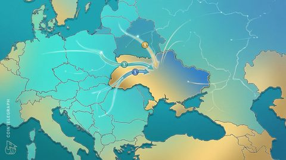
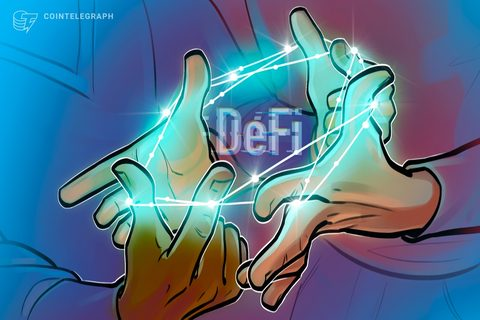

PANews
分析：比特币周跌约14%，多数加密财库公司市值已低于所持币价
PANews 11月18日消息，据彭博社报道，比特币过去一周约下跌14%，Strategy、Strive等加密财库公司股价至少下跌15%，其“溢价增发再买入加密资产”的模式承压。Blockworks追踪的25家大型数字资产财库公司中，除一家…
查看全文精选全网加密货币行业核心动态、政策风向与项目进展，7x24h 多源聚合。
PANews 11月18日消息，据彭博社报道，比特币过去一周约下跌14%，Strategy、Strive等加密财库公司股价至少下跌15%，其“溢价增发再买入加密资产”的模式承压。Blockworks追踪的25家大型数字资产财库公司中，除一家…
查看全文PANews 11月18日消息，浑水研究（Muddy Waters）11月17日在官网及X平台宣布做空英伟达，发布报告《MW is Short NVIDIA: More Questions About China》。报告质疑英伟达前全球销售…
查看全文PANews 11月18日消息，据世界银行集团官方公告，世界银行集团宣布将与花旗及Circle合作，探索以受监管的美元稳定币及区块链支付通道，配合或改进其现有基于代理行体系的资金拨付安排。其中，花旗提供现有银行通道连接，Circle负责以U…
查看全文
Chainalysis found that Eastern Europe recorded the steepest decline in crypto activity of any region, while cross-border…
查看全文PANews 11月18日消息，据彭博社报道，比特币自高点回撤约50%仍难吸引抄底盘。Glassnode数据显示，约一半流通比特币已低于上次转移价格，而9月底该比例不足四分之一；该机构跟踪的稳定币供应量在截至11月15日的30天内减少约16…
查看全文PANews 11月18日消息，微软11月17日在Ignite大会发布七款自研MAI模型，覆盖编程、网络安全、图像、实时语音等领域。官方称，MAI Code 2在多项企业编程基准上达到GPT-6.1 Sol约98%的表现、价格约为其40%…
查看全文PANews 11月18日消息，OpenAI在官网及X平台宣布，推出新一代前沿模型GPT-6.2 Astra及面向日常工作的高效模型GPT-6.2 Sol。官方称，Astra主打高难度专业任务，在幻灯片、表格、文档及编程任务上表现提升，在测…
查看全文PANews 11月18日消息，Coinbase在X平台发帖称，纽约州用户现可在Coinbase以BTC、ETH或SOL作抵押借入USDC，获得即时流动性，至此该功能已覆盖美国全部50个州。据The Block报道，该链上借贷产品基于Mor…
查看全文
Fed Governor Christopher Waller questioned who bears responsibility for fraud, compromised keys and failed transactions…
查看全文Bitcoin price downside sees local lows of $63,269 as Nvidia stock targets $150 as traders brace for volatility over Q3 e…
查看全文PANews 11月18日消息，加密托管银行Anchorage Digital宣布与预测市场平台Kalshi旗下机构业务Kalshi Prime达成合作，允许机构客户将托管在Anchorage Digital Bank的比特币和稳定币，用作…
查看全文